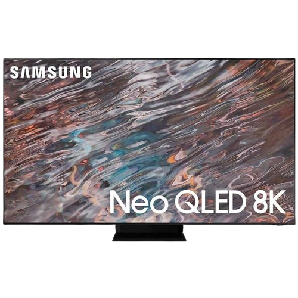

Elektrodom

Výpredaj!
1. Televízor 85" Samsung QE85QN800A

- Parametre:
- Rozmery a hmotnosť
- Šírka - 189,34 cm
- Výška - 114,58 cm
- Hĺbka - 34,37 cm
- Výška bez podstavca - 10,83 cm
- Hĺbka bez podstavca - 17,4 cm
- Hmotnosť - 54,3 kg
- VESA prichytenie 600×400
- Uhopriečka a rozšírenie
- Uhlopriečka - 85" (215,9 cm)
- Maximálne rozlíšenie - Ultra HD 8K
- Rozlíšenie displeja - 7680 × 4320 px
- Obrazovka
- Technológia - QLED
- Podsvietenie - Mini LED
- Obnovovacia frekvencia panelu - 100 / 120 Hz
- Ďalšie vlastnosti obrazu - HDR, Local Diming
- Podporované HDR štandardy - HDR10, HDR10+, HLG
- Typ
- Typ - Smart TV
- Operačný systém - Tizen OS
- Modelový rok
- Modelový rok - 2021
- Pripojenie
- Bezdrôtové pripojenie - WiFi , Bluetooth , Apple AirPlay 2, DLNA
- Výstupy 2.0 - USB, LAN, HDMI 2.1, HDMI 2.0, digitálny optický/digitálny audio výstup, CI+ 1.4
- HDMI - 4 ×
- USB - 3 ×
Cena: 7 499€ ---> 5 499€
2. POCO X3 Pro 256 GB gradientná čierna

- Parametre:
- Základné parametre
- Uhlopriečka displeja - 6,67"
- Rozlíšenie displeja - 2400 × 1080
- Operačný systém - Android
- Operačná pamäť - 8 GB
- Konfigurácia kariet - Hybridný slot
- Slot na pamäťovú kartu - Áno
- Typ pamäťovej karty - MicroSD
- Maximálna veľkosť pamäťovej karty - 1000 GB
- Rozlíšenie zadnej kamery - 48 Mpx
- Rozlíšenie prednej kamery - 20 Mpx
- Funkcie - Rýchle nabíjanie, Čítačka odtlačkov prstov na tele, Podpora MMS, OTG
- Konštrukcia
- Typ - Dotykový displej
- Výška - 165,3 mmm
- Šírka - 76,8 mm
- Hĺbka - 9,4 mm
- Hmotnosť - 215 g
- Farba - Čierna
- Displej
- Uhlopriečka displeja - 6,67" (16,94 cm)
- Typ displeja - IPS
- Pomer veľkosti displeja k telu - 84,6%
- Obnovovacia frekvencia - 120 Hz
- Jemnosť displeja - 395 PPI
- Tvar výrezu v displeji - Kruh
- Software
- Verzia operačného systému - Android 11
- Nadstavba - MIUI
- Výdrž a výkon
- Kapacita batérie - 5 160 mAh
- Max. výkon drôtového napájania - 33 W
- Operačná pamäť - 8 GB
- Vnútorná pamäť - 256 GB
- Značka procesora - Qualcomm
- Počet jadier procesora - 8 x
- Frekvenicia procesora - 2,9 GHz (2 900 MHz)
- Grafický akcelerátor - Adreno 640
- Značka/model telefónu
- Značka telefónu - Xiaomi
- Model zariadenia - Poco X3 Pro
Cena: 249€ ---> 99€
3. JBL Tune 500BT čierne

- Parametre:
- Základné parametre
- Vyhotovenie - Na uši
- Konštrukcia - Uzatvorená
- Mikrofón - áno
- Bluetooth - áno
- Verzia Bluetooth - 4.1
- Typ slúchadiel
- Vyhotovenie - Na uši
- Konštrukcia - Uzatvorená
- Mikrofón - áno
- Pripojenie
- Typ pripojenia - Bluetooth
- Verzia Bluetooth - 4.1
- Vlastnosti a funkcie
- Funkcie - s ovládaním hlasitosti, prijímanie hovorov, prepínanie skladieb, hlasový asistent
- Ďalšie vlastnosti - skladacia konštrukcia, otočné mušle
- Charakteristika slúchadiel
- Frekvencia od - 20 Hz
- Frekvencia do - 20 000 Hz
- Veľkost meniča - 32 mm
- Batéria
- Maximálna výdrž batérie - 16 h
- Výdrž batérie (slúchadlá) - 16 h
- Hmotnosť
- Hmotnosť - 155 g
Cena: 39,90€ ---> 28,90€
4. SAMSUNG WW90T986ASH/S7

- Parametre:
- Základné parametre
- Typ modelu - samostatne stojací model
- dTest - Nie
- Typ modelu - samostatne stojací model
- Vážená spotreba energie - 49 kWh/100 c.
- Maximálna kapacita práčky (program ECO 40-60) - 9 kg
- Energetické parametre práčky 2021
- Energetická trieda - A
- Vážená spotreba energie - 49 kWh/100 c
- Doba trvania (program ECO 40-60) - 199 min (3,32 h)
- Maximálna kapacita práčky (program ECO 40-60) - 9 kg
- Vážená spotreba vody na cyklus - 50 l
- Rozmery práčky
- Hĺbka - 60 cm
- Šírka - 60 cm
- Výška - 85 cm
- Vlastnosti
- Plnenie - Spredu
- Typ modelu - samostatne stojací model
- Hmotnosť
- Hmotnosť - 79 kg
- Farba práčky
- Farba - Biela
Cena: 1 158,90€ ---> 589,90€
5. Macbook Pro 13" Retina SK 2020 s Touch Barom Vesmírne sivý
- Parametre:
- Základné parametre
- SSD Kapacita - 1 000 GB (1 TB)
- Veľkosť operačnej pamäte - 16 GB
- Čip grafickej karty - Intel Iris Plus Graphics
- Modelové označenie procesora - Intel Core i7 1068NG7 Ice Lake
- Typ úložiska - SSD
- Uhlopriečka displeja - 13,3"
- Procesor
- Typ procesora - Intel Core i7
- Počet jadier procesora - 4 x
- Funkcie procesora - Automatické pretaktovanie, HyperThreading, Podpora Virtualizácie
- Displej
- Uhlopriečka displeja - 13,3"
- Pomer strán - 16:10
- Typ panela - IPS
- Rozlíšenie displeja 2560 × 1600 px
- Typ displeja - Lesklý
- Rozmer
- Šírka - 304,1 mm
- Maximálna výška - 15,6 mm
- Hĺbka - 212,4 mm
- Batéria
- Maximálna výdrž batérie - 17 h
- Nabíjanie cez USB-C - Možnosť nabíjať cez USB-C